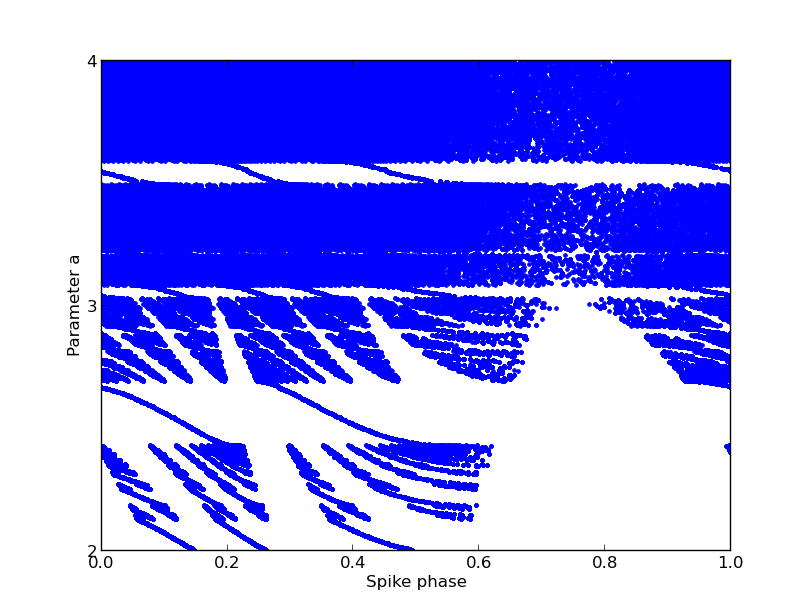

For the paper: Brette R (2004) Dynamics of one-dimensional spiking neuron models. J Math Biol 48:38-56 Abstract: In this paper we make a rigorous mathematical analysis of one-dimensional spiking neuron models in a unified framework. We find that, under conditions satisfied in particular by the periodically and aperiodically driven leaky integrator as well as some of its variants, the spike map is increasing on its range, which leaves no room for chaotic behavior. A rigorous expression of the Lyapunov exponent is derived. Finally, we analyse the periodically driven perfect integrator and show that the restriction of the phase map to its range is always conjugated to a rotation, and we provide an explicit expression of the invariant measure. A brian simulator model is available at this web page: http://briansimulator.org/docs/examples-frompapers_Brette_2004.html The simulation generates an image similar to Fig. 2A in the paper:  This simulation requires Brian which can be downloaded and installed from the instructions available at http://www.briansimulator.org/ For support on installing and using Brian simulations there is a support group at https://groups.google.com/group/briansupport.